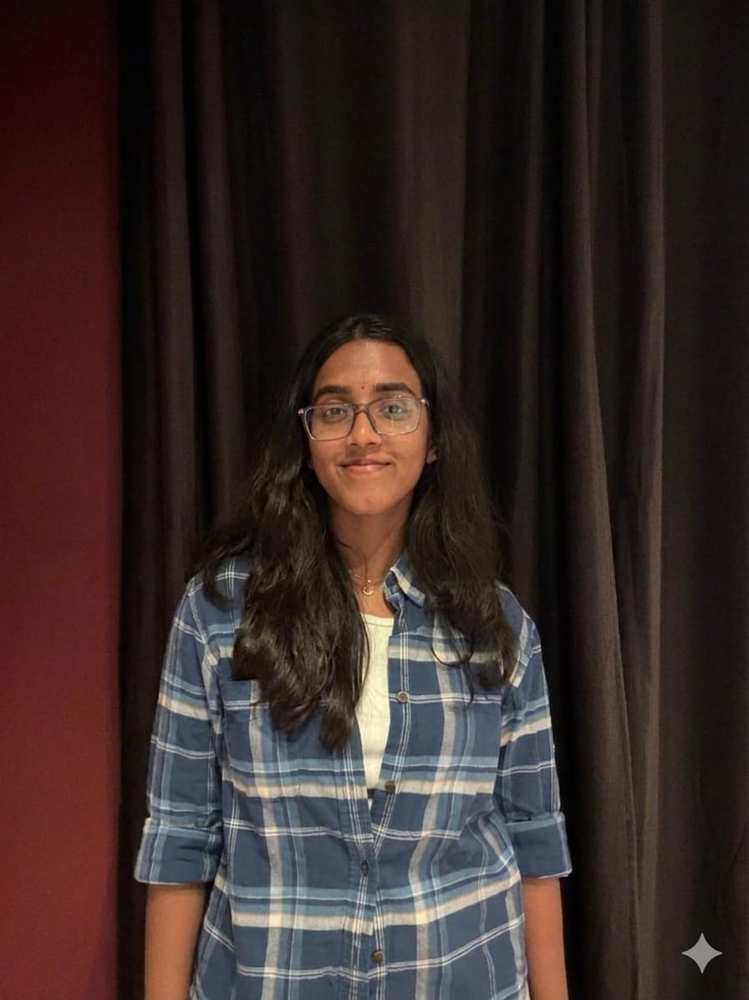

Cybersecurity Student • Network Security • CTF Player • Security Operations

Motivated Cybersecurity student at GITAM University with hands-on experience in network defense, digital forensics, penetration testing, and security operations.
Passionate about solving real-world security problems through practical learning, CTF competitions, and security-focused development projects.
Developed a secure image steganography tool using AES-256 encryption and LSB data-hiding techniques for concealed file storage within PNG images.
Built a multi-threaded TCP port scanner with banner grabbing, service detection, and JSON-based reporting.